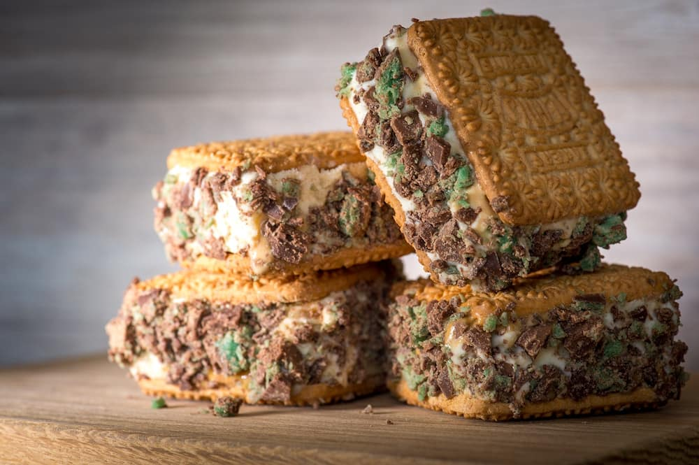

Peppermint Crisp Tart
Prep Time: 15min
Yield: 6
Ingredients
Directions
- Whisk cream until soft peaks form. Add caramel top 'n' fill and mix until combined.
- Crush peppermint crisp bars. Fold 3/4 of the bars into the cream mix.
- Layer Tennis biscuits at the bottom of a tray. Dollop cream mix over. Repeat with second layer.
- Finish with a final layer of cream and sprinkle with remaining peppermint crisp.
- Chill overnight, then slice and serve.